Ogni contributo verifica fonti primarie e indica cosa cambia per il destinatario. Mai marketing, mai pareri travestiti.
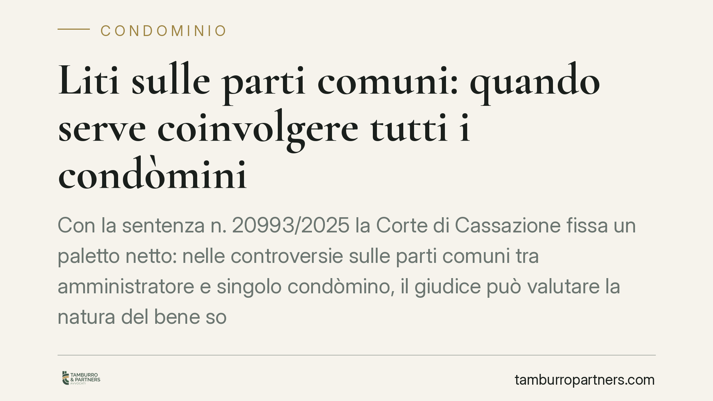
Con la sentenza n. 20993/2025 la Corte di Cassazione fissa un paletto netto: nelle controversie sulle parti comuni tra amministratore e singolo condòmino, il giudice può valutare l…
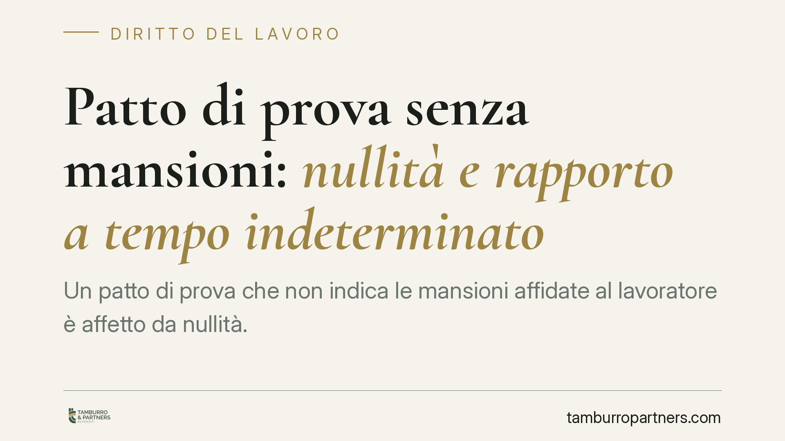
Un patto di prova che non indica le mansioni affidate al lavoratore è affetto da nullità. La conseguenza civilistica è precisa: la clausola cade, ma il contratto resta in piedi com…
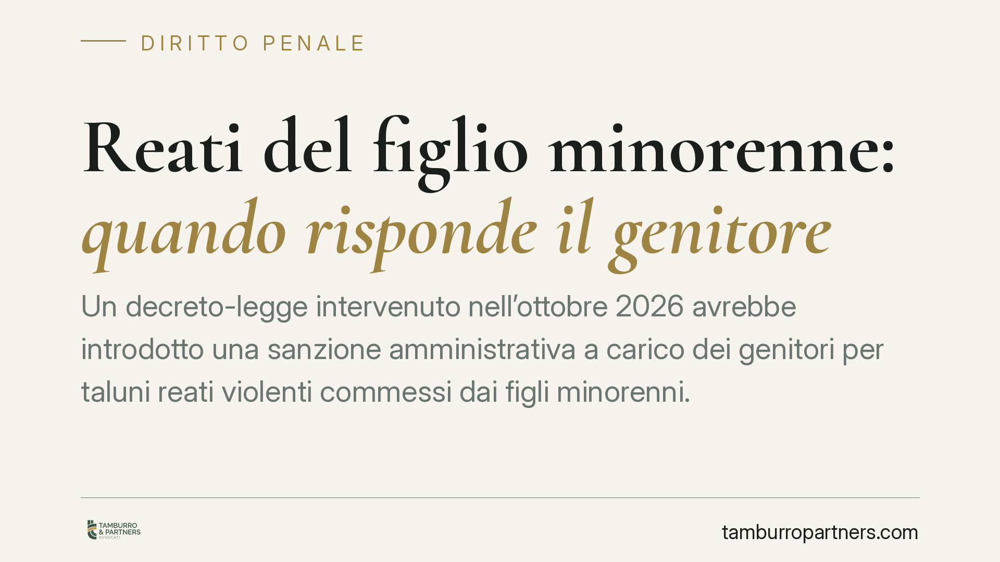
Un decreto-legge intervenuto nell'ottobre 2026 avrebbe introdotto una sanzione amministrativa a carico dei genitori per taluni reati violenti commessi dai figli minorenni. Il testo…
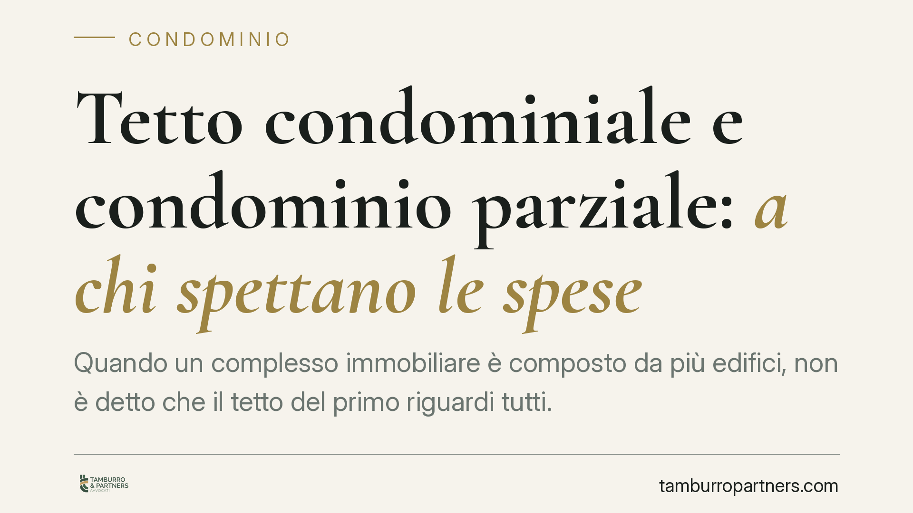
Quando un complesso immobiliare è composto da più edifici, non è detto che il tetto del primo riguardi tutti. Se la copertura serve solo quel fabbricato, le spese gravano sui suoi …
Una recente pronuncia della Corte di Giustizia Tributaria di primo grado di Prato chiarisce un punto delicato: l'esenzione IMU sulla casa familiare assegnata all'ex coniuge non vie…
Un bonifico senza causale precisa non cancella automaticamente il debito contestato. Lo ribadisce la Corte di Cassazione: quando esistono più debiti verso lo stesso creditore, è il…
Perdere il lavoro non cancella l'obbligo di mantenere i figli. La giurisprudenza di merito e di legittimità è costante: l'omesso versamento dell'assegno può integrare reato anche i…
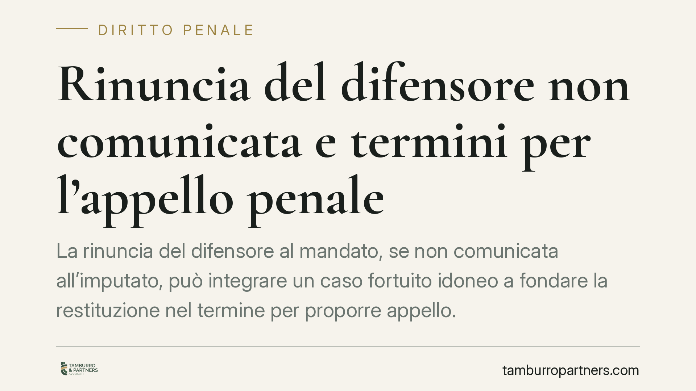
La rinuncia del difensore al mandato, se non comunicata all'imputato, può integrare un caso fortuito idoneo a fondare la restituzione nel termine per proporre appello. Non si tratt…
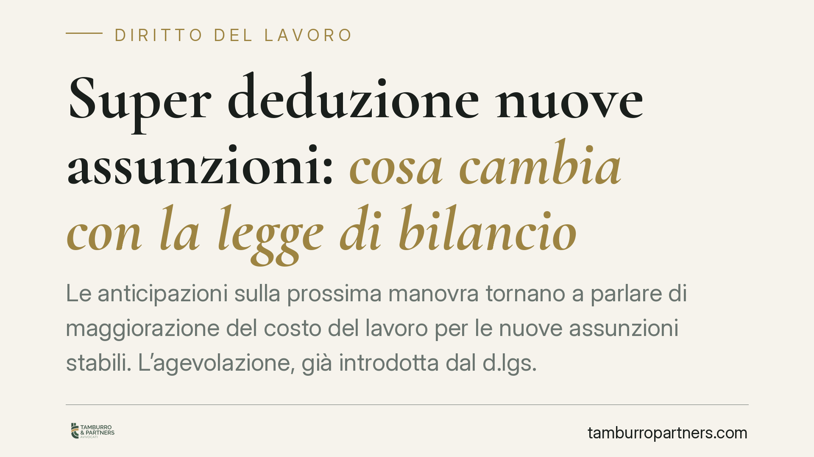
Le anticipazioni sulla prossima manovra tornano a parlare di maggiorazione del costo del lavoro per le nuove assunzioni stabili. L'agevolazione, già introdotta dal d.lgs. 216/2023,…
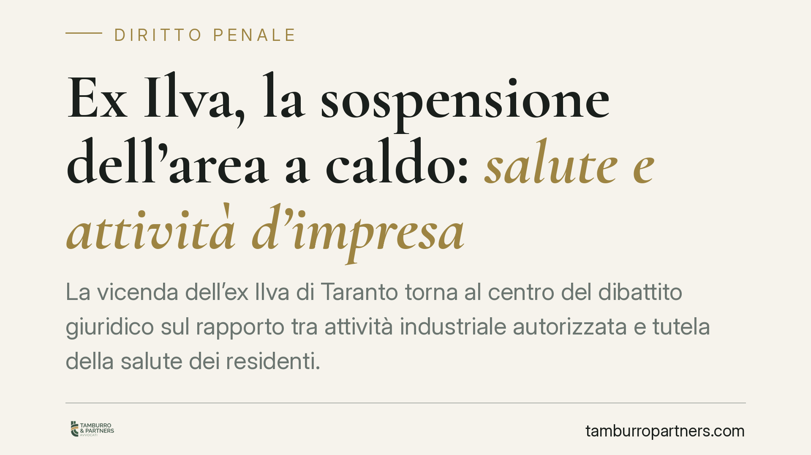
La vicenda dell'ex Ilva di Taranto torna al centro del dibattito giuridico sul rapporto tra attività industriale autorizzata e tutela della salute dei residenti. Al di là delle spe…
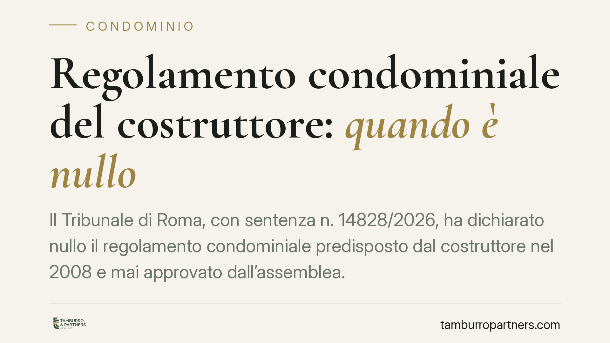
Il Tribunale di Roma, con sentenza n. 14828/2026, ha dichiarato nullo il regolamento condominiale predisposto dal costruttore nel 2008 e mai approvato dall'assemblea. L'impegno gen…
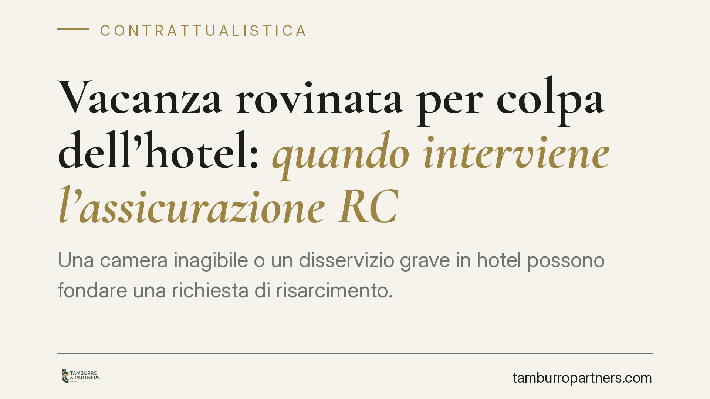
Una camera inagibile o un disservizio grave in hotel possono fondare una richiesta di risarcimento. Ma la polizza di responsabilità civile dell'albergatore copre anche l'inadempime…
Un'impresa in difficoltà ottiene un nuovo mutuo dalla banca per estinguere un debito già esistente verso lo stesso istituto. Operazione lecita o costruzione fittizia? La giurisprud…
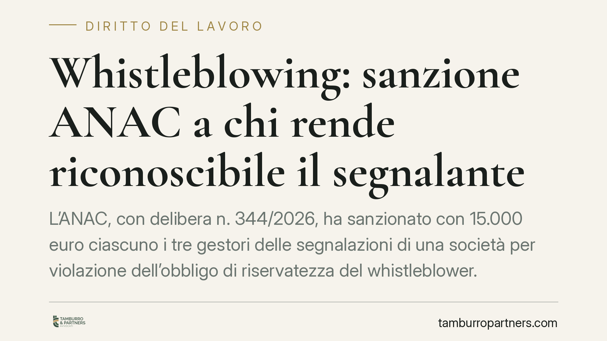
L'ANAC, con delibera n. 344/2026, ha sanzionato con 15.000 euro ciascuno i tre gestori delle segnalazioni di una società per violazione dell'obbligo di riservatezza del whistleblow…
Il Garante Privacy ha sanzionato Piaggio per l'accesso alla casella di posta di un dipendente sospettato di infedeltà. La decisione riafferma che l'email aziendale resta un dato pe…
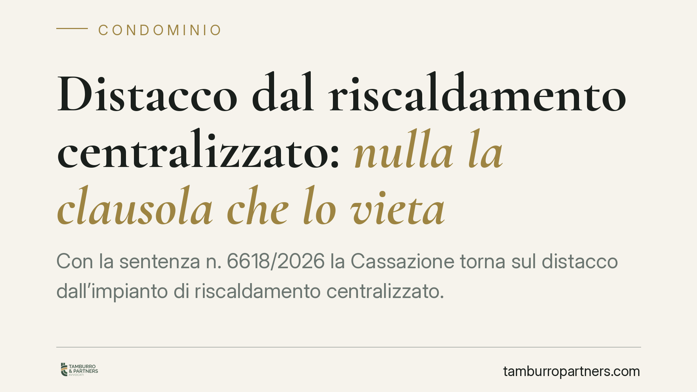
Con la sentenza n. 6618/2026 la Cassazione torna sul distacco dall'impianto di riscaldamento centralizzato. Il principio è netto: è nulla la clausola del regolamento condominiale c…
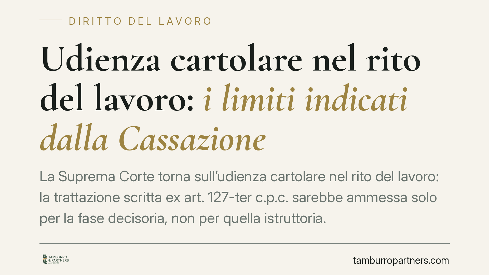
La Suprema Corte torna sull'udienza cartolare nel rito del lavoro: la trattazione scritta ex art. 127-ter c.p.c. sarebbe ammessa solo per la fase decisoria, non per quella istrutto…
Il dibattito sulle manifestazioni che degenerano in violenza torna al centro dell'agenda politica, con annunci di un nuovo intervento normativo in materia di ordine pubblico. Prima…
Un ente del Terzo settore può operare con o senza personalità giuridica. La differenza non è formale: incide sulla responsabilità di chi agisce in nome dell'ente. Il Codice del Ter…
Il Tribunale di Roma, con la sentenza 570/2026, ha chiarito che la nomina dell'amministratore resta valida anche quando il compenso non è trascritto nel verbale, ma determinato tra…
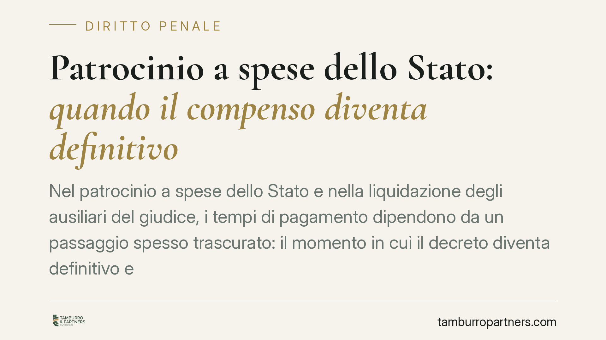
Nel patrocinio a spese dello Stato e nella liquidazione degli ausiliari del giudice, i tempi di pagamento dipendono da un passaggio spesso trascurato: il momento in cui il decreto …
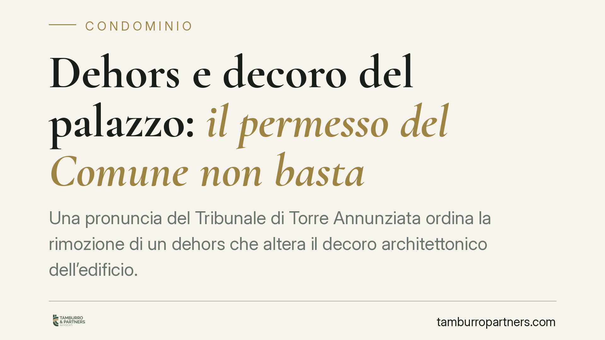
Una pronuncia del Tribunale di Torre Annunziata ordina la rimozione di un dehors che altera il decoro architettonico dell'edificio. Il punto chiave: la concessione comunale del suo…
Quando due coniugi separati tornano a vivere insieme, la separazione perde efficacia. Ma che fine fanno i ratei di mantenimento non versati prima della ripresa della convivenza? La…
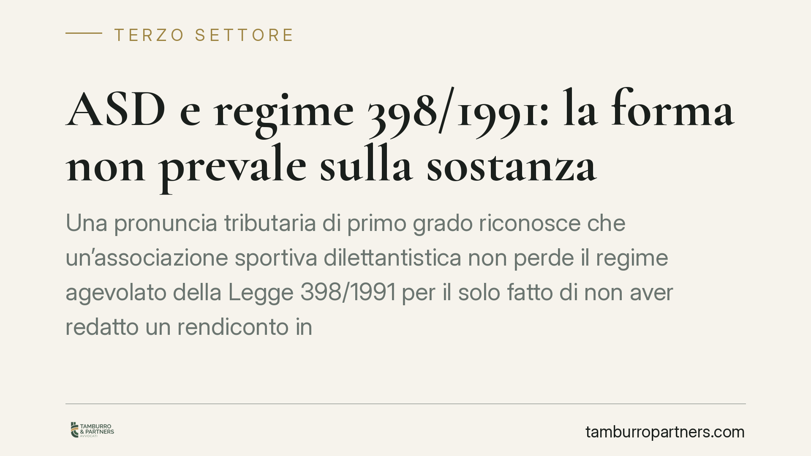
Una pronuncia tributaria di primo grado riconosce che un'associazione sportiva dilettantistica non perde il regime agevolato della Legge 398/1991 per il solo fatto di non aver reda…
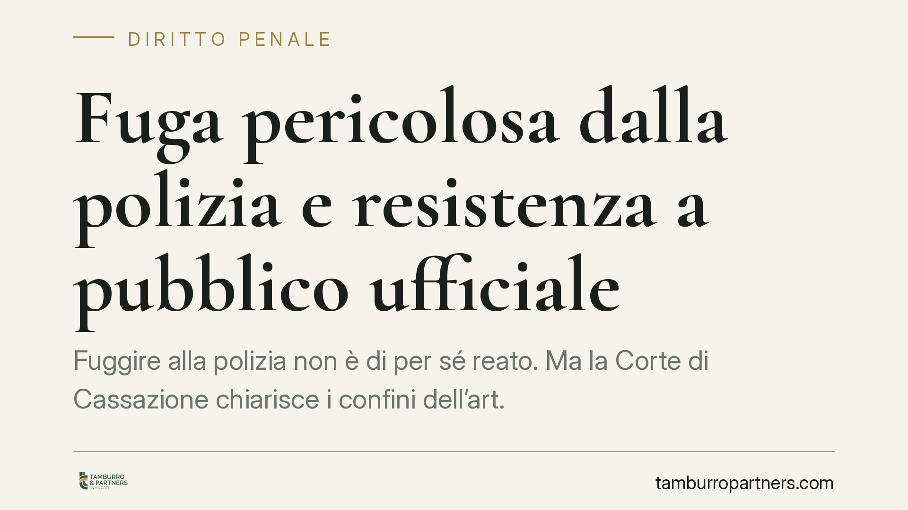
Fuggire alla polizia non è di per sé reato. Ma la Corte di Cassazione chiarisce i confini dell'art. 337 del codice penale: quando la fuga diventa oggettivamente pericolosa, può con…
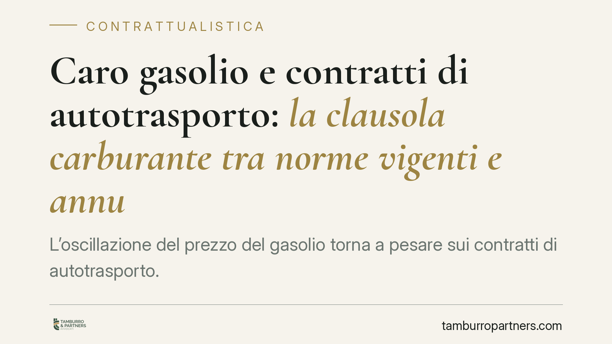
L'oscillazione del prezzo del gasolio torna a pesare sui contratti di autotrasporto. Si parla di nuovi parametri pubblici per calcolare la quota carburante e di obblighi di traspar…
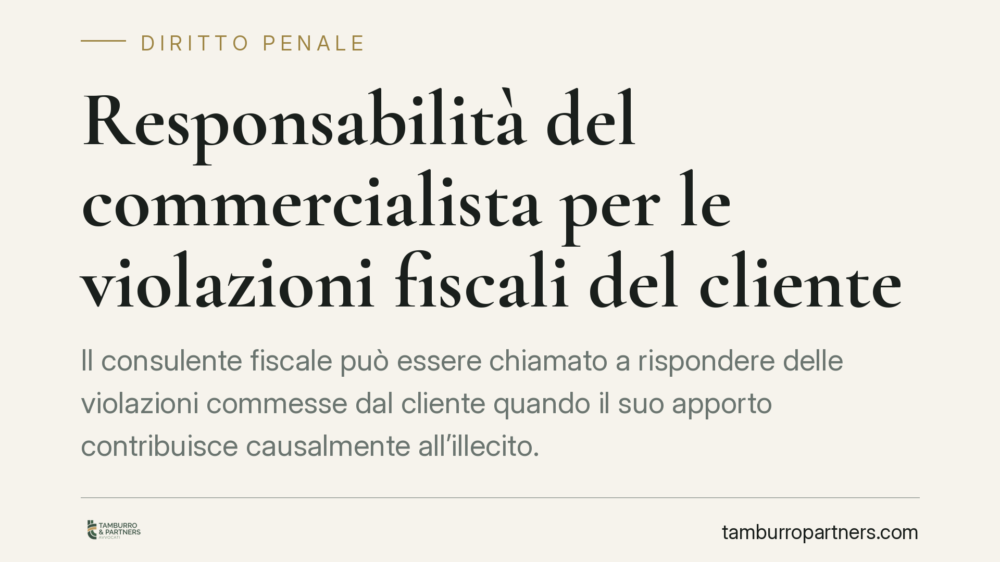
Il consulente fiscale può essere chiamato a rispondere delle violazioni commesse dal cliente quando il suo apporto contribuisce causalmente all'illecito. Un orientamento recente de…
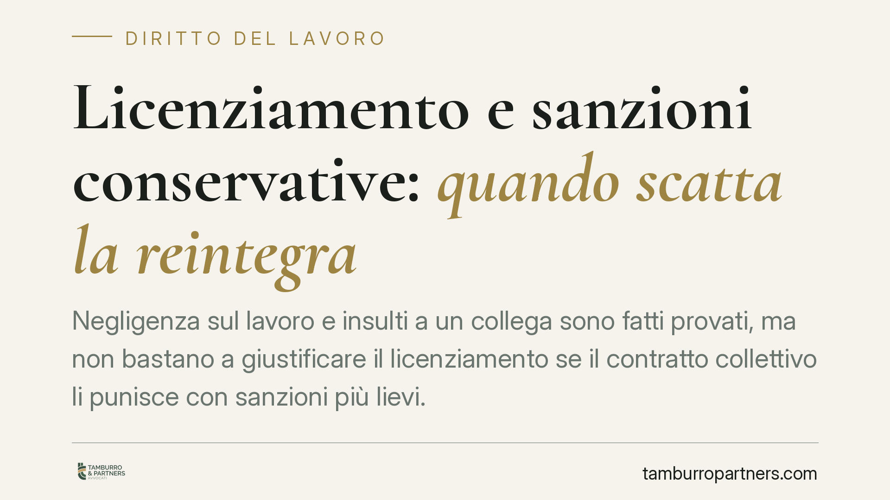
Negligenza sul lavoro e insulti a un collega sono fatti provati, ma non bastano a giustificare il licenziamento se il contratto collettivo li punisce con sanzioni più lievi. La Cor…
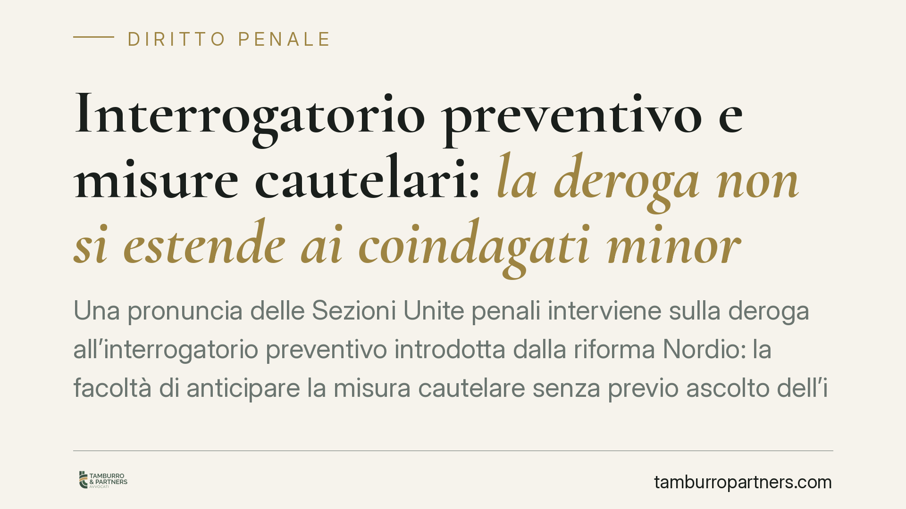
Una pronuncia delle Sezioni Unite penali interviene sulla deroga all'interrogatorio preventivo introdotta dalla riforma Nordio: la facoltà di anticipare la misura cautelare senza p…
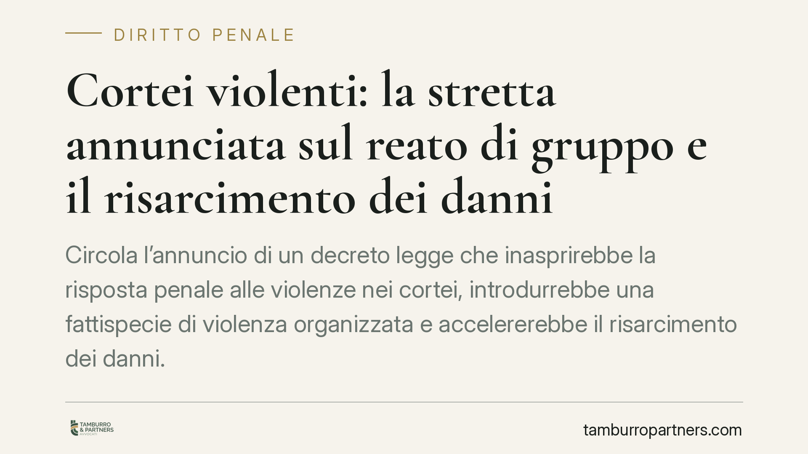
Circola l'annuncio di un decreto legge che inasprirebbe la risposta penale alle violenze nei cortei, introdurrebbe una fattispecie di violenza organizzata e accelererebbe il risarc…